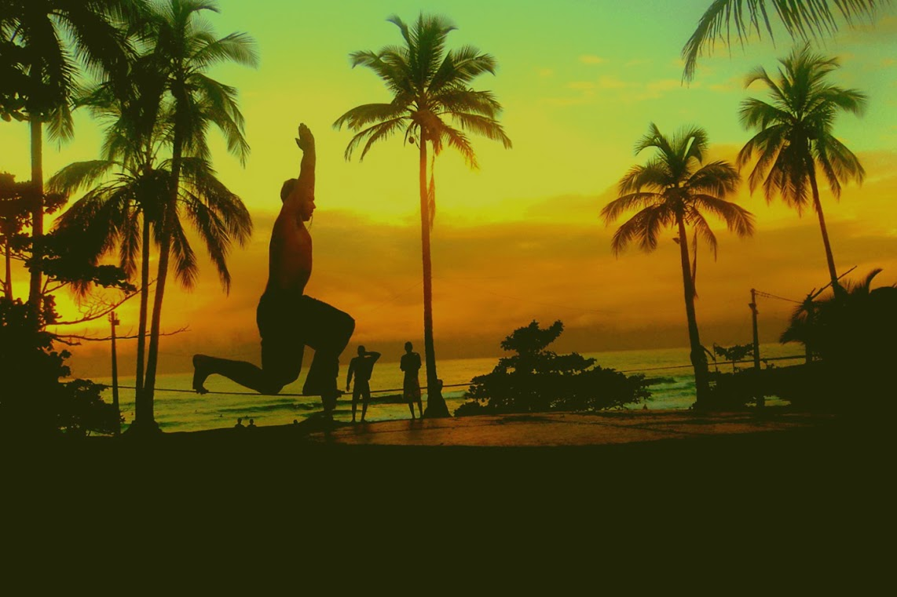
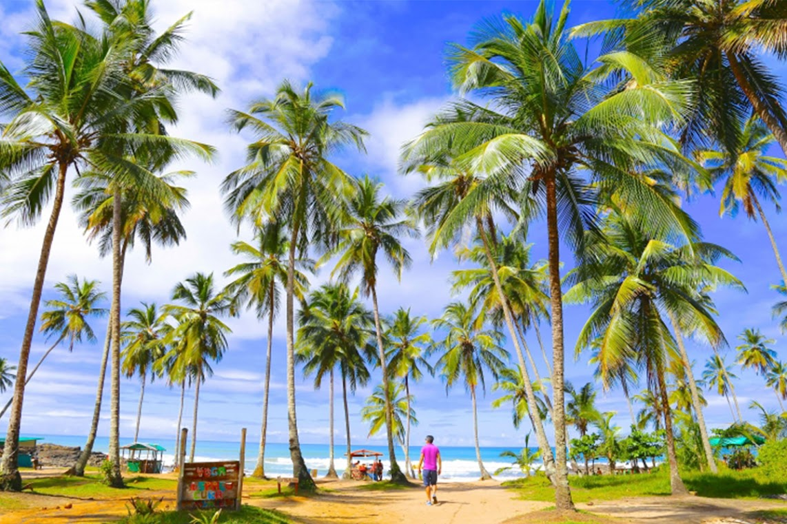
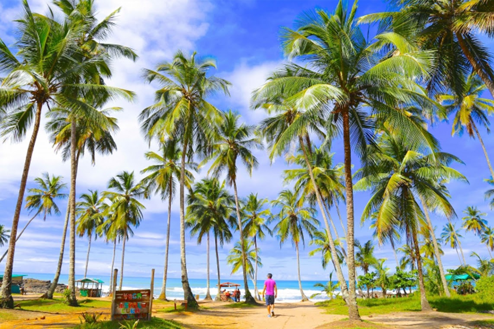
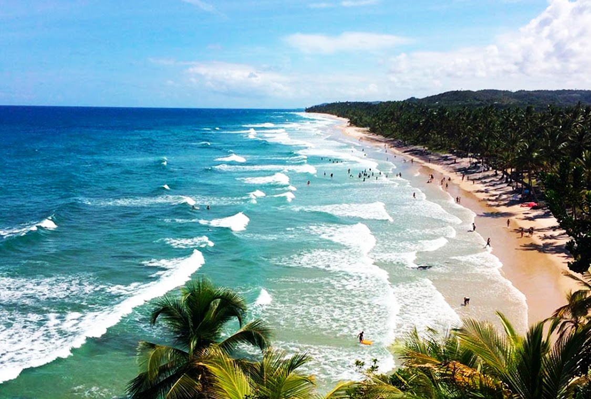

Conheça o Hotel Paraíso
Feche os olhos e imagine o paraiso. Um lugar no meio da mata atlântica e banhado pelo mar, onde você encontra a paz,
tranquilidade, conforto e comodidade.
______________________________________________
 



Único Hotel pé na areia de Itacaré
Implantado em uma área completamente arborizada, o Hotel Paraíso é o único hotel pé areia de Itacaré.Aqui o mar será
seu companheiro e você tera as belezas naturais como galeria.